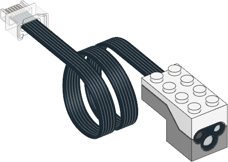

| ✅ | ✅ | ✅ | ✅ | ✅ | ✅ | ❌ |
|---|
Color and Distance Sensor

- class ColorDistanceSensor(port)
LEGO® Powered Up カラー・距離センサー。
- Parameters:
port (Port) – センサーを接続するポート。
- await color() Color
表面の色をスキャンします。
検出する色は
detectable_colors()メソッドで選択します。 デフォルトではColor.RED、Color.YELLOW、Color.GREEN、Color.BLUE、Color.WHITE、Color.NONEを検出します。- Returns:
検出された色。
- await hsv() Color
表面の色をスキャンします。
このメソッドは
color()に似ていますが、最も近い検出可能な色に 丸めるのではなく、色相、彩度、輝度の全範囲の値を返します。- Returns:
測定された色。色は色相（0–359）、彩度（0–100）、 輝度（0–100）で表されます。
- detectable_colors(colors)
- detectable_colors() Collection[Color]
color()メソッドが検出する色を設定します。アプリケーションで検出したい色だけを指定してください。これにより、 フルカラー測定値は最も近い指定色に丸められ、他の色は無視されます。 これにより信頼性が向上します。
引数を指定しない場合は、現在選択されている色が返されます。
ブロックでコーディングする場合は、センサーセットアップブロックで 設定します。
内蔵ライト
このセンサーには内蔵ライトがあります。赤・緑・青に光らせたり、オフにしたりできます。 この後にセンサーで測定を行うと、ライトはその測定方法のデフォルトの色で 自動的に点灯し直します。
使用例
色を測定する
from pybricks.parameters import Port
from pybricks.pupdevices import ColorDistanceSensor
from pybricks.tools import wait
# Initialize the sensor.
sensor = ColorDistanceSensor(Port.A)
while True:
# Read the color.
color = sensor.color()
# Print the measured color.
print(color)
# Move the sensor around and see how
# well you can detect colors.
# Wait so we can read the value.
wait(100)
色を待つ
from pybricks.parameters import Color, Port
from pybricks.pupdevices import ColorDistanceSensor
from pybricks.tools import wait
# Initialize the sensor.
sensor = ColorDistanceSensor(Port.A)
# This is a function that waits for a desired color.
def wait_for_color(desired_color):
# While the color is not the desired color, we keep waiting.
while sensor.color() != desired_color:
wait(20)
# Now we use the function we just created above.
while True:
# Here you can make your train/vehicle go forward.
print("Waiting for red ...")
wait_for_color(Color.RED)
# Here you can make your train/vehicle go backward.
print("Waiting for blue ...")
wait_for_color(Color.BLUE)
距離を測定してライトを点滅させる
from pybricks.parameters import Color, Port
from pybricks.pupdevices import ColorDistanceSensor
from pybricks.tools import wait
# Initialize the sensor.
sensor = ColorDistanceSensor(Port.A)
# Repeat forever.
while True:
# If the sensor sees an object nearby.
if sensor.distance() <= 40:
# Then blink the light red/blue 5 times.
for i in range(5):
sensor.light.on(Color.RED)
wait(30)
sensor.light.on(Color.BLUE)
wait(30)
else:
# If the sensor sees nothing
# nearby, just wait briefly.
wait(10)
色相・彩度・明度を読み取る
from pybricks.parameters import Port
from pybricks.pupdevices import ColorDistanceSensor
from pybricks.tools import wait
# Initialize the sensor.
sensor = ColorDistanceSensor(Port.A)
while True:
# The standard color() method always "rounds" the
# measurement to the nearest "whole" color.
# That's useful for most applications.
# But you can get the original hue, saturation,
# and value without "rounding", as follows:
color = sensor.hsv()
# Print the results.
print(color)
# Wait so we can read the value.
wait(500)
検出する色を変更する
デフォルトでは、センサーは赤・黄・緑・青・白・無色を検出するように 設定されており、多くの用途に適しています。
アプリケーションでより良い結果を得るには、検出したい色を事前に測定し、 センサーにその色だけを探させることができます。色は必ず、実際に使うときと 「同じ距離・同じ光の条件」で測定してください。そうすれば、通常は 検出しにくい色でも非常に正確な結果が得られます。
from pybricks.parameters import Color, Port
from pybricks.pupdevices import ColorDistanceSensor
from pybricks.tools import wait
# Initialize the sensor.
sensor = ColorDistanceSensor(Port.A)
# First, decide which objects you want to detect, and measure their HSV values.
# You can do that with the hsv() method as shown in the previous example.
#
# Use your measurements to override the default colors, or add new colors:
Color.GREEN = Color(h=132, s=94, v=26)
Color.MAGENTA = Color(h=348, s=96, v=40)
Color.BROWN = Color(h=17, s=78, v=15)
Color.RED = Color(h=359, s=97, v=39)
# Put your colors in a list or tuple.
my_colors = (Color.GREEN, Color.MAGENTA, Color.BROWN, Color.RED, Color.NONE)
# Save your colors.
sensor.detectable_colors(my_colors)
# color() works as usual, but now it returns one of your specified colors.
while True:
color = sensor.color()
# Print the color.
print(color)
# Check which one it is.
if color == Color.MAGENTA:
print("It works!")
# Wait so we can read it.
wait(100)